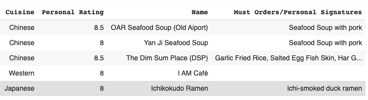
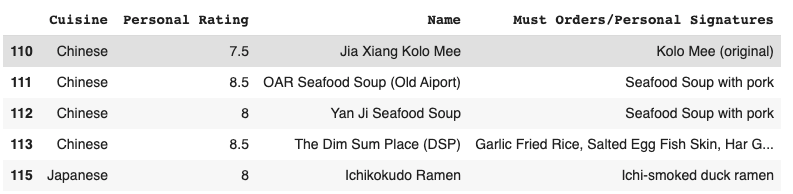

5 Best Tricks for Pandas
Become a Data Scientist Pro!


Introduction
If you are interested in Data engineering, Data analysis or even Machine Learning, learning how to use the Python open-source library Pandas is crucial. In this article, I will be going over some of the most useful tricks in Pandas, that I personally used when cleaning large amounts of data.
Content Page
Removing Unnecessary Columns
When managing a dataframe, I only want to use the columns that are relevant. This makes the work tidier and less overwhelming. One way is to use
df.drop(columns=[“irrelevant_column_name"], inplace=True)
To drop the unwanted columns. However, this method becomes verbose when the number of columns to drop increases. Thus I use this shortcut:
df = df[["column_1", “column_2”, “column_3”]]
column_1, column_2 and column_3 are columns that I want to keep. Do take note that reassigning the df is necessary!
For exaple:
restaurants = restaurants[["Cuisine", "Personal Rating", "Name", "Must Orders/Personal Signatures"]]
initial database

cleaned database
Number of Unique Values
When I want to find all the unique values of a column in a dataframe but the dataframe is simply too large, I would use
df[“column_name”].unique()
this would return an array of all the unique values in the column. This is especially useful when cleaning data and debugging data that may slightly differ as users input the same data differently.
For example, I want to find out all the cuisine types in the database, I would use
df[“Cuisine”].unique()
And the output is:
array(['Italian', 'Café', 'Chinese', 'Japanese', 'Taiwanese',
'Korean', 'Indian', 'Malaysian', 'Thai', 'Peranakan',
'Western'], dtype=object)
Splitting Values in a Column
Splitting a column into 2 happens more often than I thought and this trick is a really convenient way to do so. For example, I want to split the “Name” column into “first_name”, “second_name” and “thrid_name”. The code is as follows:
restaurant["first_name"] = restaurant["Name"].str.split(‘ ’,expand=True)[0]
restaurant["second_name"] = restaurant["Name"].str.split(‘ ’,expand=True)[1]
restaurant["third_name"] = restaurant["Name"].str.split(‘ ’,expand=True)[2]
table with new columns at the end
As you can see, there are 3 new columns that correspond to the respective positions of the Names of the restaurants.
Breaking down how the code works: .str.split(“ ”) essentially splits the values in the column into a list of[name_1, name_2, name_3]. The indexing then selects the first, second or third number to be the input for the new column.
Checking for Empty Dataframe
Checking if a dataframe is present or not is simple when we can use .head() or .tail() method to view the first or last 5 rows respectively. However, it is more difficult to check if the dataframe is empty in a conditional statement. Luckly, df.empty is all there is to that conditional check! For example, if
Df.empty:
print “this df is empty!”
Df.empty returns a boolean, ie a True or False value. If Df is empty, the evaluation would be True and "this df is empty!" will be printed. This has definitely helped me debug my code!
Clearing Null Data
Last but not least is removing Not Application or Null data from your dataframe. Such data always messes up my end product and getting rid of them always brings a smile to my face! Here are 3 quick ways to remove such data! your local branch to the remote repository. Ensure that you are in the merge-receiving branch (most of the time it is master/origin). It is also important to verify that the 2 branches are updated with the latest commits, this is to prevent some past code to “fall through the cracks”.
df = df[ df['storey_range'].notna() ]
df.dropna( columns={‘storey_range’}, inplace=True)
df = df[df[“storey_range”] != “”]
Unorganised and dirty data may have empty strings as input value and .notna() function will not work on such cases as such, in order to ensure that all empty data is weeded out, remember to use the last filter.
intial database

cleaned database without the null/empty values
Well, that is all for my 5 tips on making data cleaning much easier! I hope you have learnt a lot and I guarantee they will come in handy whenever you are cleaning a table. Check out our other articles to learn more about coding. Stay cool Cucumbers!